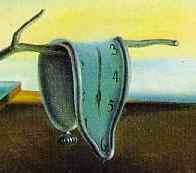
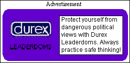

| SIXTH EDITION | MONDAY 19th APRIL | |||||||
| MORNING FIST | |||||||||
| |||||||||
| |||||||||||||||||
Date Rape

The world is running out of time. With now only a matter of months to go, experts are warning that the millennium may not be Leader-compliant, and that when the dates tick over from December 31st 1999 to January 1st 2000 time itself might crash with disastrous consequences.
The Christian calendar was designed in the 1970s and `80s, when nobody predicted its centrality to modern life, and - more importantly - nobody could have imagined the importance of The Leader. Naive calendar programmers and diary designers simply assumed that numbers would go on as they always had before. And although all legitimately-produced time in recent years has taken account of Leader-compatible technology, older time is waiting to fail on a grand scale when L2K strikes.
Particularly sensitive are those devices which depend heavily on outdated time. It is feared that history books could crash across the globe, leaving readers trapped screaming in archives and libraries full of malfunctioning pasts. Nostalgia could also be at risk, with large chunks of memory resetting or shutting themselves down in confusion.
Solutions to L2K are feverishly sought by The Leader's scientists, in the hope that catastrophe can be averted. An enormous Procrastinating Engine is being built in space to project a force field, which would simply put the problem off to some other time, hoping that it goes away.

Many respondents to a recent survey intended to transfer their memories into elephants before the millennium, since the pachyderms are reputed to be immune. However, preparation is patchy and complacency widespread. While most of the larger historians of Europe and America claim to have safeguards in place, time in the developing world lacks the resources to protect itself. Particular concern surrounds the military history of Russia, largely decrepit and ill-maintained since the fall of the Soviet Union, which could be accidentally launched causing immense devastation.